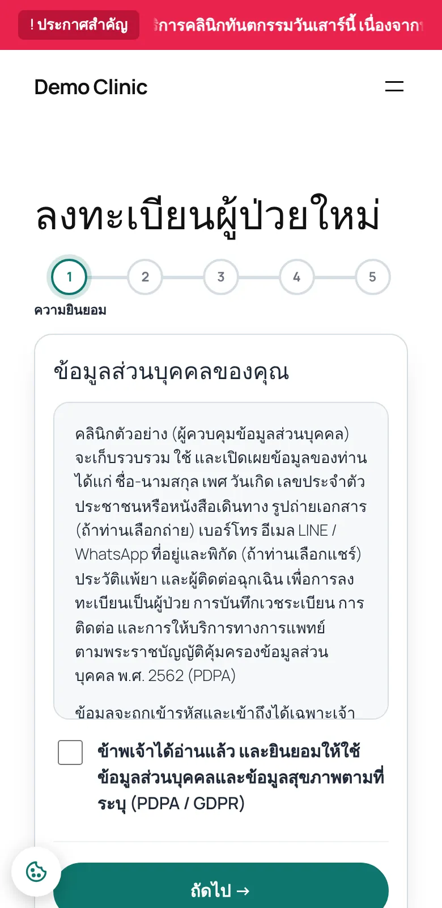
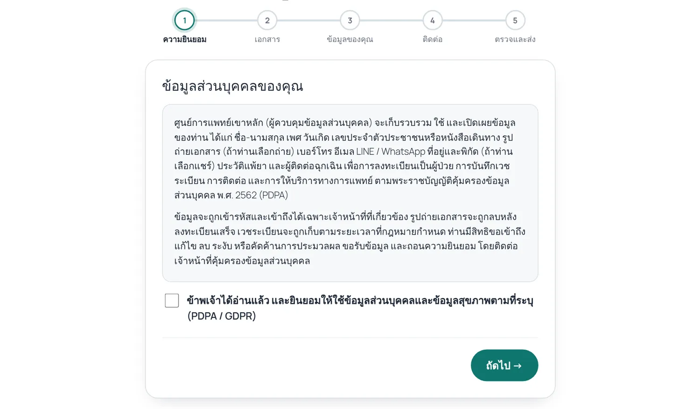
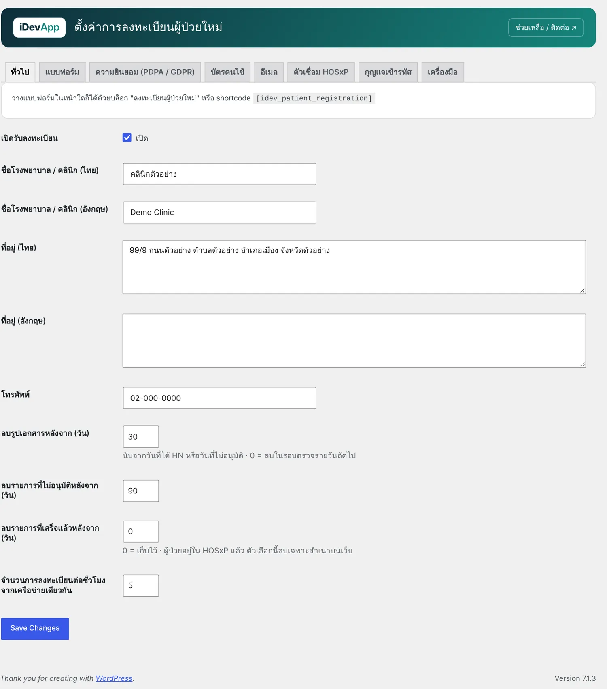
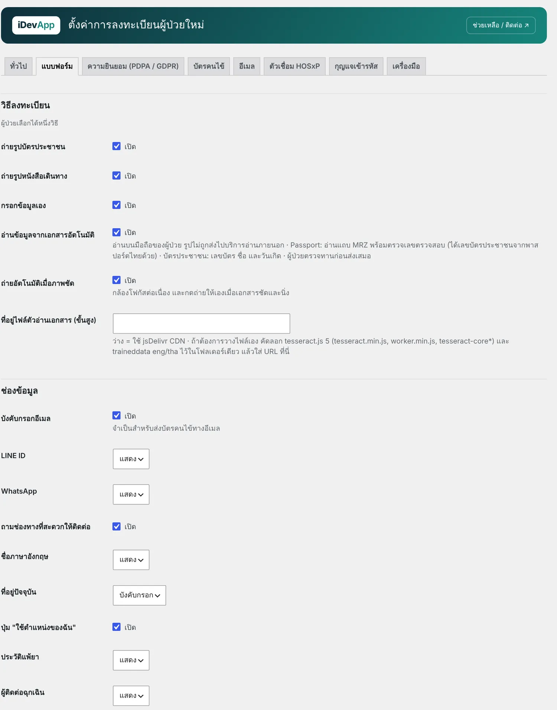
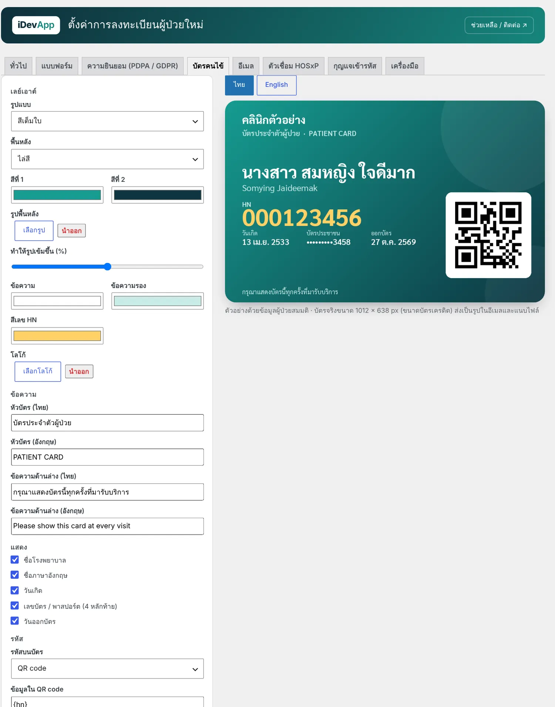
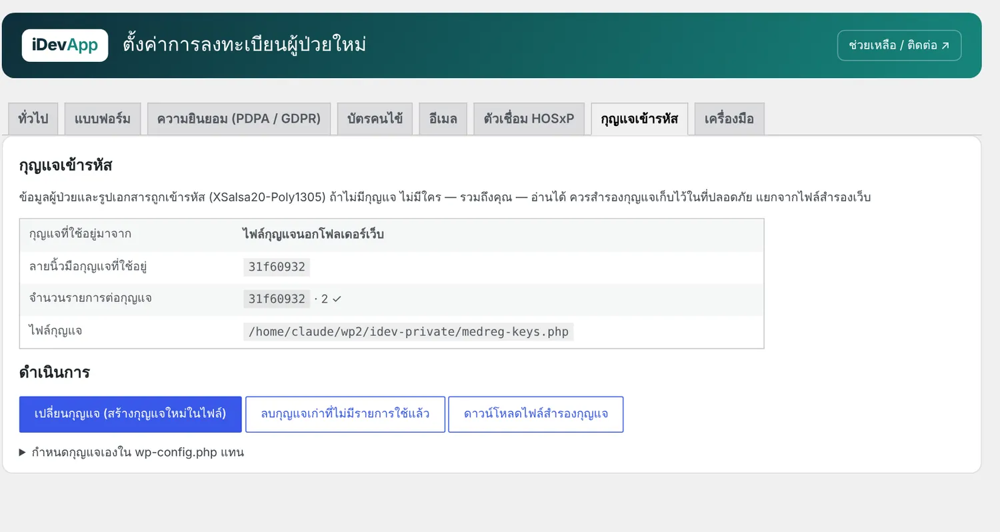
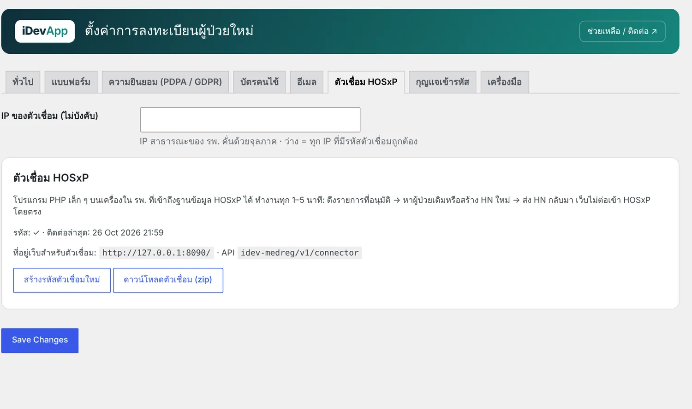
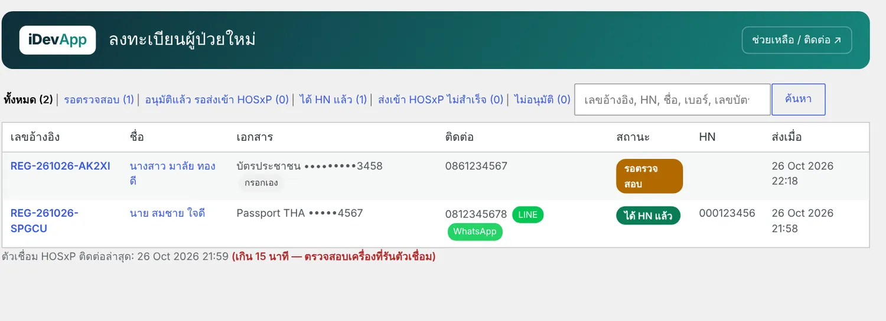

1ความสามารถ


- ผู้ป่วยเลือก 1 ใน 3 วิธี: ถ่ายรูปบัตรประชาชน · ถ่ายรูปหนังสือเดินทาง · กรอกเอง
- กล้องโฟกัสต่อเนื่อง ตรวจความคมชัด และกดถ่ายให้เองเมื่อเอกสารนิ่งและชัด แตะเพื่อโฟกัสได้
- อ่านข้อมูล บนมือถือของผู้ป่วย (รูปไม่ถูกส่งไปบริการภายนอก) · พาสปอร์ตอ่านแถบ MRZ พร้อมตรวจเลขตรวจสอบ และได้เลขบัตรประชาชนจากพาสปอร์ตไทย
- ช่องทางติดต่อ: โทรศัพท์ อีเมล LINE และ WhatsApp
- เจ้าหน้าที่ตรวจกับรูปเอกสาร แก้ไขได้ แล้ว อนุมัติส่งเข้า HOSxP หรือใส่ HN เอง
- บัตรคนไข้ออกแบบได้ เลย์เอาต์ สี รูปพื้นหลัง โลโก้ QR code / บาร์โค้ด ส่งเป็นรูปทางอีเมล
- ข้อมูลและรูปเอกสาร เข้ารหัส (XSalsa20-Poly1305) จัดการกุญแจ สำรองกุญแจ และเปลี่ยนกุญแจได้
- ลบรูปเอกสารอัตโนมัติหลังได้ HN · จำกัดจำนวนการลงทะเบียนต่อชั่วโมง
2เริ่มต้นใช้งาน
- สร้างหน้าลงทะเบียน
สร้างหน้า เช่น "ลงทะเบียนผู้ป่วยใหม่" ใส่บล็อก ลงทะเบียนผู้ป่วยใหม่ หรือ
[idev_patient_registration] - ตั้งค่าทั่วไป
ลงทะเบียนผู้ป่วย › ตั้งค่า › ทั่วไป ใส่ชื่อ รพ./คลินิก ไทยและอังกฤษ ที่อยู่ เบอร์โทร ระยะเวลาเก็บรูปเอกสาร

แท็บทั่วไป - เลือกวิธีลงทะเบียนและช่องข้อมูล
แท็บ แบบฟอร์ม เปิด/ปิดวิธีลงทะเบียน การอ่านเอกสารอัตโนมัติ การถ่ายอัตโนมัติ และกำหนดว่าช่องใด บังคับกรอก / ไม่บังคับ / ซ่อน (ชื่ออังกฤษ ที่อยู่ ตำแหน่ง แพ้ยา ผู้ติดต่อฉุกเฉิน LINE WhatsApp)

แท็บแบบฟอร์ม - ข้อความความยินยอม
แท็บ ความยินยอม (PDPA / GDPR) ข้อความไทยและอังกฤษ ช่องทางติดต่อ DPO และลิงก์นโยบายความเป็นส่วนตัว ควรให้ DPO หรือฝ่ายกฎหมายตรวจ แก้ข้อความแล้วนับเป็นฉบับใหม่
- ออกแบบบัตรคนไข้
แท็บ บัตรคนไข้ เลือกเลย์เอาต์ (สีเต็มใบ / พื้นขาวหัวสี / สีอ่อน) สี รูปพื้นหลัง โลโก้ ข้อมูลบนบัตร และรหัส QR / บาร์โค้ด ตัวอย่างอัปเดตทันที

ตัวออกแบบบัตรคนไข้ — บัตรจริงขนาด 1012 × 638 px (ขนาดบัตรเครดิต) ข้อมูลใน QR ใช้
{hn}{ref}{site}แนะนำ{hn}อย่างเดียวสำหรับเครื่องสแกนที่จุดลงทะเบียน ไม่ควรใส่ชื่อหรือวันเกิดใน QR - ตั้งค่ากุญแจเข้ารหัส (สำคัญ)
แท็บ กุญแจเข้ารหัส กด ใช้ไฟล์กุญแจแยก (แนะนำ) แล้วกด ดาวน์โหลดไฟล์สำรองกุญแจ เก็บแบบออฟไลน์ เช่น USB ที่เข้ารหัสหรือโปรแกรมจัดการรหัสผ่าน

แท็บกุญแจเข้ารหัส ถ้ากุญแจหาย ไม่มีใคร — รวมถึงผู้ดูแลระบบ — เปิดข้อมูลผู้ป่วยได้ ถ้าใช้กุญแจที่สร้างจาก AUTH_KEY แล้วค่านั้นใน wp-config.php เปลี่ยน ให้ใส่ค่าเดิมเป็น
IDEV_MEDREG_OLD_AUTH_KEYและIDEV_MEDREG_OLD_SECURE_AUTH_KEYเพื่อกู้คืน - เชื่อม HOSxP (ถ้าใช้)
แท็บ ตัวเชื่อม HOSxP กด สร้างรหัสตัวเชื่อม (คัดลอกเก็บทันที จะไม่แสดงอีก) แล้ว ดาวน์โหลดตัวเชื่อม (zip) ไปติดตั้งบนเครื่องใน รพ. ที่เข้าถึงฐานข้อมูล HOSxP ได้

แท็บตัวเชื่อม HOSxP
3การทำงานกับ HOSxP
เว็บไม่เชื่อมต่อฐานข้อมูล HOSxP โดยตรง ตัวเชื่อมเป็นโปรแกรม PHP เล็ก ๆ บนเครื่องใน รพ. ทำงานทุก 1–5 นาที:
- ดึงรายการที่เจ้าหน้าที่ อนุมัติ แล้ว
- หาผู้ป่วยเดิม (ใช้ HN เดิม) หรือสร้าง HN ใหม่
- ส่ง HN กลับมาที่เว็บ → ระบบส่ง บัตรคนไข้ ทางอีเมลอัตโนมัติ
ตัวเชื่อมมี 3 โหมด: dry-run (ทดสอบ ไม่เขียนอะไร) · lookup-only (หาผู้ป่วยเดิมเท่านั้น) · insert (สร้าง HN ใหม่) แนะนำเริ่มจาก dry-run
# Linux: crontab -e แล้วเพิ่มบรรทัดนี้ (ทุก 2 นาที)
*/2 * * * * php /opt/hosxp-connector/hosxp-connector.php >/dev/null 2>&1Windows: Task Scheduler → Create Task → Trigger ทุก 2 นาที → Action C:\php\php.exe อาร์กิวเมนต์ C:\hosxp-connector\hosxp-connector.php · รายละเอียดอยู่ในไฟล์ README-TH.md ใน zip ตัวเชื่อม
ไม่ใช้ HOSxP ก็ได้: ในหน้ารายการลงทะเบียน กด ใส่ HN เอง หลังบันทึกในระบบของ รพ. แล้ว ระบบจะส่งบัตรคนไข้ให้เหมือนกัน
4งานของเจ้าหน้าที่

- สถานะ: รอตรวจสอบ → อนุมัติแล้ว รอส่งเข้า HOSxP → ได้ HN แล้ว (หรือ ไม่อนุมัติ / ส่งเข้า HOSxP ไม่สำเร็จ)
- เปิดรายการเพื่อตรวจข้อมูลกับรูปเอกสาร แก้ไขที่ระบบอ่านผิดได้ แล้วกด ✓ อนุมัติ ส่งเข้า HOSxP
- ผู้ป่วยที่กรอกเอง ให้ตรวจเอกสารตัวจริงที่จุดลงทะเบียนเมื่อมาครั้งแรก
- ส่งอีเมลบัตรอีกครั้ง · ดาวน์โหลด บัตรเป็นรูป
- บทบาท เจ้าหน้าที่เวชระเบียน เห็นเฉพาะเมนูลงทะเบียน ไม่ต้องให้สิทธิ์ผู้ดูแลเว็บ
5บล็อกและ Shortcode
| บล็อก / Shortcode | ใช้ทำอะไร |
|---|---|
[idev_patient_registration] | ฟอร์มลงทะเบียน (บล็อก ลงทะเบียนผู้ป่วยใหม่) |
สำหรับนักพัฒนา
| Hook | เมื่อไร |
|---|---|
idev_medreg_submitted | ผู้ป่วยส่งแบบฟอร์มสำเร็จ |
idev_medreg_hn_issued | ได้ HN แล้ว (จาก HOSxP หรือเจ้าหน้าที่ใส่เอง) |
idev_medreg_submit_response | filter ข้อมูลที่ส่งกลับหลังลงทะเบียน |
6ปัญหาที่พบบ่อย
อ่านบัตร/พาสปอร์ตไม่ได้
- ถ่ายในที่สว่าง ไม่มีแสงสะท้อนบนบัตร วางเอกสารให้เต็มกรอบ
- พาสปอร์ต: ต้องเห็นสองบรรทัด
<<<ด้านล่างครบ - อ่านได้บางส่วน ผู้ป่วยแก้และกรอกต่อได้ทุกช่องก่อนส่ง
กล้องไม่เปิดในหน้าเว็บ
เว็บต้องเป็น https และผู้ป่วยต้องอนุญาตกล้อง ถ้าเปิดไม่ได้ ระบบให้ถ่ายด้วยแอปกล้องแล้วอัปโหลดแทน
รายการขึ้น "(อ่านไม่ได้ — ตรวจกุญแจเข้ารหัส)"
กุญแจที่ใช้อยู่ไม่ตรงกับตอนบันทึก ดูแท็บ กุญแจเข้ารหัส ระบบบอกจำนวนรายการต่อกุญแจ และวิธีใส่ค่า AUTH_KEY เดิมเพื่อกู้คืน
ตัวเชื่อม HOSxP ไม่ติดต่อมาเกิน 15 นาที
ตรวจว่า cron บนเครื่องตัวเชื่อมยังทำงาน เครื่องออกอินเทอร์เน็ตได้ และรหัสตัวเชื่อมตรงกับที่สร้างล่าสุด